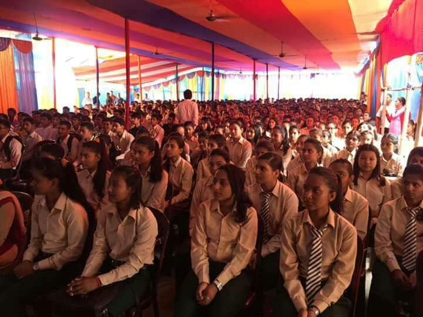

Dear student applicants, parents and guardians
We feel delighted in your interest in considering Arniko for admission. As you might know,
our College offers all its +2 and A Level students really fine opportunities to excel
in academics and also extra-curricular activities. Consequently, the Arniko experience
is a wonderful preparation for life in the 21st century whether you live and work in Nepal or abroad.
Finding the right college is finding the right circumstances for the educational and career
success of every student. This College strives to attract the best Nepalese, and foreign,
students by way of talent, potential, energy, and application.

A candidate applying for admission to the +2 Science Programme should have the following minimum qualification:
- Students must score at least 2GPA in SEE exam
- C+ in Science and Math
- C in English
- D+ in Social and Nepali.